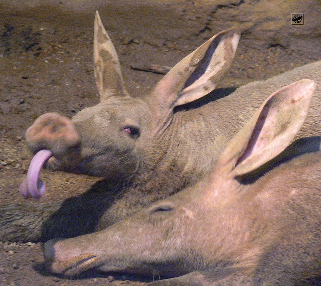
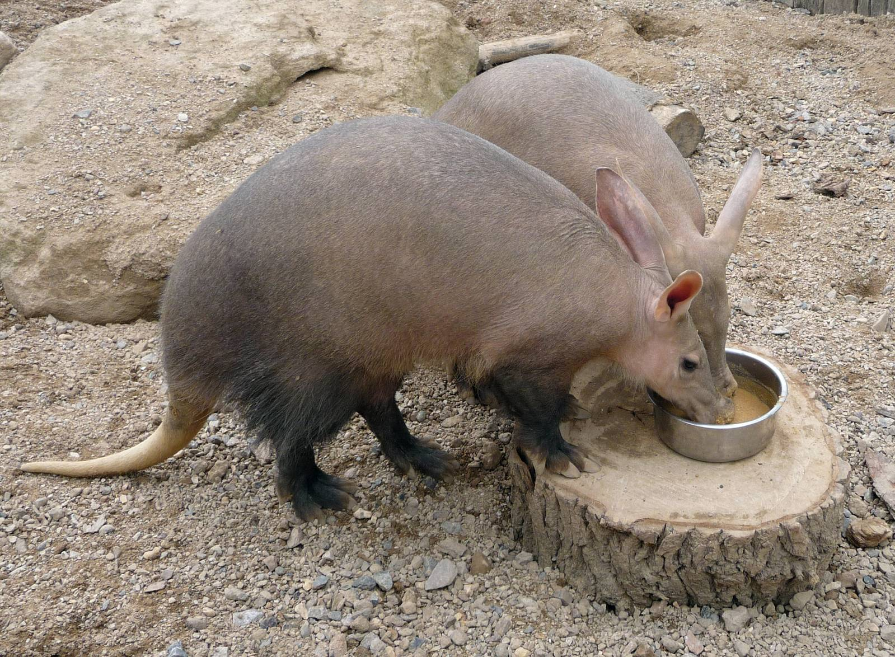

An Aardvark
you can use to protect yourselves from Boomers in 2020
#1
They are the cutest
thing ever!
How can you not resist them? 😍 They're like a hybrid of a pig and a dog. THAT, IS, CUTE! Boomers will never be able to adore this animal!

They eat
ANTS!
Let's get rid off these pesky ANTS! Having an Aardvark is a very effective and efficient way to remove ants from your home.

Their tongues can
wrap around things! 😲
If only Britain's Got Talent were amazed by animals. Aardvarks have long tongues that can wrap around things! Absolutely phenomonal creature.
They can find their own
food!
The boomers voted Brexit on the 12th March 2019. Why don't you add Aardvarks into your Brexit Survival Plan? While the rest of the United Kingdom survives on Universal Credit and Heinz Baked Beans, you could be out there hunting berries with your ant-eating friend!
They'll never leave you
like Karen did.
We're sorry about Karen, but you should of had better taste; Your relationship with Karen was x100 more horrific than being best friends with a Aardvark. Friendsies for life 🤭
Now you know. Get an Aardvark.
KNOW MOREThis was part of a project called 'I asked the Internet' by Clark Narvas